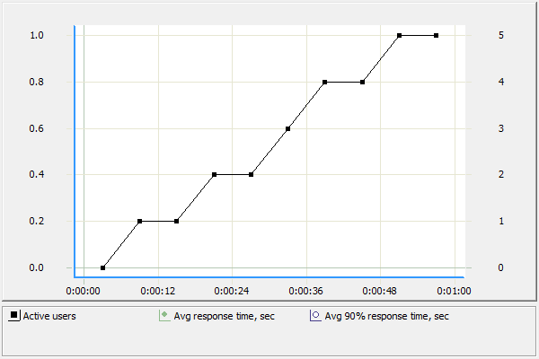

addviewer.page_1: http://adviewer.ir/
http://adviewer.ir:80/
addviewer.page_2: http://adviewer.ir/Styles/Fonts/bbc-nassim-regular.eot
http://adviewer.ir:80/Styles/Fonts/bbc-nassim-regular.eot
addviewer.page_3: http://adviewer.ir/Styles/fontawesome-webfont.eot
http://adviewer.ir:80/Styles/fontawesome-webfont.eot